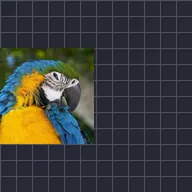

Frequenza fotogrammi

Fa muovere questo livello a una frequenza fotogrammi più bassa, come un filmato a scatti o in stop motion.
Frequenza fotogrammi fa muovere il livello a una frequenza di fotogrammi più bassa, con un effetto a scatti, come lo stop motion. Funziona su video, forme, testo e gruppi. Imposta quanti fotogrammi al secondo deve mostrare il livello: più il numero è basso, più il movimento è a scatti.
- Da 8 a 12 fotogrammi al secondo danno un effetto disegnato a mano, stop motion.
- Anima il numero per passare in modo graduale da movimento a scatti a movimento fluido.
- Metti l'effetto su un gruppo per rendere a scatti tutto ciò che contiene, insieme.
Impostazioni
| Impostazione | Tipo | Intervallo | Predefinito |
|---|---|---|---|
| Fotogrammi/s | Numero | Da 0.1 a 120 | 5 |